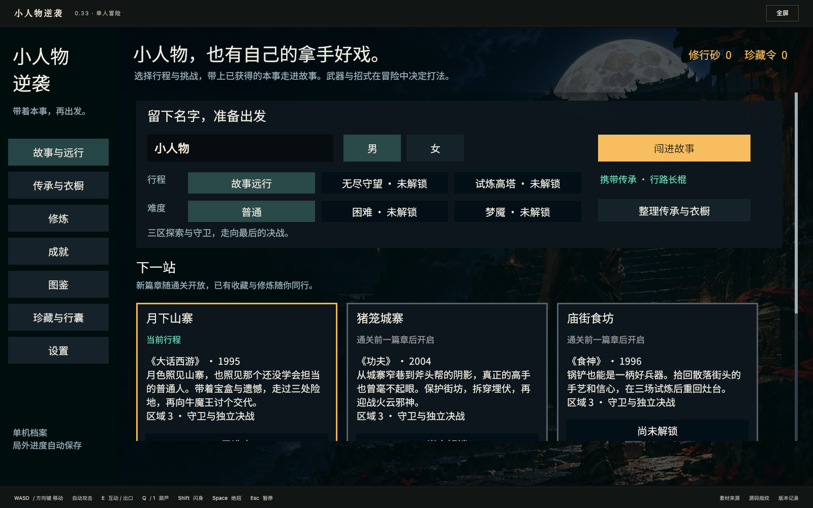
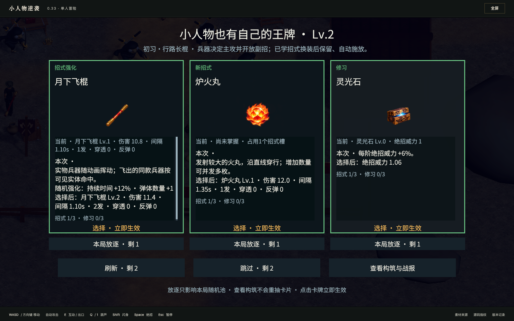
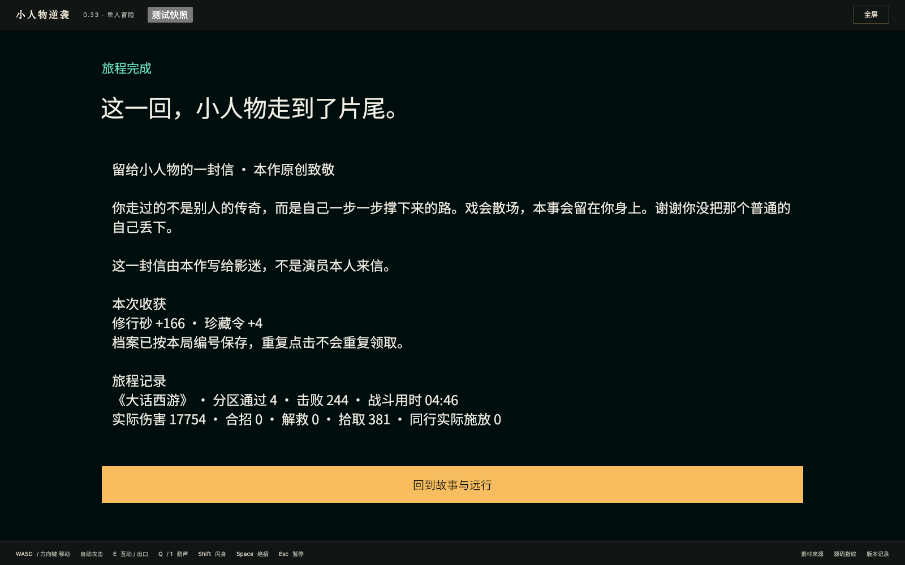
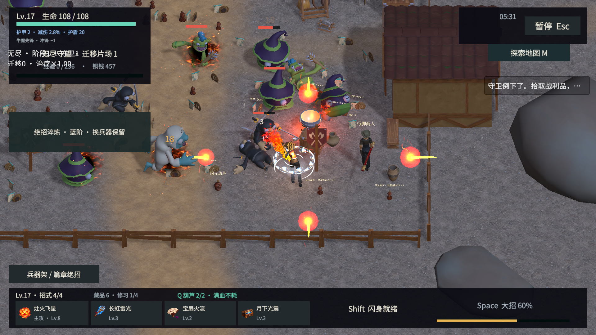

0.33.0-preview.2 · 单人网页试玩 · 2026-10-27
五幕已实际打通，问题继续公开记录
打开试玩 · 电脑浏览器直接运行，无需安装 Unity。
本地完整链以普通鼠标、WASD 和游戏内真实按钮操作，从新档开始，保留正常掉落、升级和局外修炼。没有修改生命、伤害、等级、货币或跳关。五幕通关共用了 7 局，第四幕保留两次战斗失败；结算后普通刷新，场次、胜场、余额与解锁一致。
这是有明确验收记录的试玩版本。电影场景联想、人物辨识和建筑遮挡仍需打磨，未将它宣布为最终成品。联网合作与云账号后续接入。
实际走完的五幕
| 电影灵感 | 实际局数 | 胜局分区 | 胜局守卫 | 胜局击杀 | 结算等级 |
|---|
| 《大话西游》 | 1 | 4 | 4 | 230 | 16 |
| 《功夫》 | 1 | 4 | 4 | 321 | 18 |
| 《食神》 | 1 | 4 | 4 | 227 | 16 |
| 《少林足球》 | 3 | 4 | 4 | 279 | 16 |
| 《国产凌凌漆》 | 1 | 4 | 4 | 238 | 18 |
胜局合计 20 个分区、15 次保留构筑的转场、20 个守卫。历史“25关”目标尚不能由这 20 区替代。
这轮修复与验证
- 顶部状态与读招提示分列，战斗中央让出空间。保留原相机和真实技能几何。
- 中断恢复页使用明确的中文字体与完整背景清底；新用例真实点击“知道了，继续”返回大厅，两次普通刷新后账本与完整存档稳定。
- 三种电脑窗口尺寸实际检查：1600×1000、1366×768、1280×800。原生画面尺寸与真实 canvas 逐次核对。
- 本轮 124 次卡片交易、21 次真实兵器切换均留存记录。技能的永久强化按实际前后数据核对；不把临时蓄势算成永久升级。
- 重复融合选项已修复；10fa 版本的一次正常融合及隔离旧局回归证据单独保留，本次五幕通关没有自然融合。
 新包实图：Boss、玩家与中央战斗空间更清楚；这张图不能代替所有边缘位置验证。
新包实图：Boss、玩家与中央战斗空间更清楚；这张图不能代替所有边缘位置验证。 新恢复用例：中文按钮、背景清底与后续真实点击均有记录。该用例没有制造战斗胜利。
新恢复用例：中文按钮、背景清底与后续真实点击均有记录。该用例没有制造战斗胜利。公开链接已实际试玩
公网包的68个文件与本地逐字节一致。另用全新公网档选择女角色、从兵器架换用灵扇，前两局自然失败后，第三局完成第一幕4分区、4守卫、244击杀、Lv17及19次绝招；正常刷新后进度一致，测试进程正常0退出。只读测试档也确认女角色选择已保存。这个结果只认证公网第一幕灵扇路线，没有把它说成灵扇五幕全通。
普通分享地址不带测试参数，也已实际检查：首页→闯进故事→WASD移动与自动战斗→自然Lv2三选一卡→暂停→主动结算→回大厅→普通刷新。没有显示测试按钮，未出现控制台或网络错误；这项14秒实战用例主动撤退，没有计为通关。
本次全新公网档约17.4秒到可操作大厅，属于单次本机网络观察，不能代表所有设备或网络。

直接分享的普通页面：首页没有测试按钮。
普通页面实战自然升到Lv2后出现的三张卡，已实际点击第一张并返回战斗。
公网灵扇第一幕真实结算；前两次失败仍在测试历史中。仍存在的问题
- 建筑遮挡：第四幕的门楼屋顶仍会挡住人物或Boss。现有遮挡剔除只覆盖部分场景，需要沿已有系统补齐；不直接隐藏整栋建筑或改变碰撞。
- 灵扇起步：公网前两次尝试在Lv1/Lv2失败，第三局搭配绕身冰晶和炉火丸后通关。需继续区分命中、成长节奏与操作策略，不能只凭一次构筑成功宣布平衡完成。
- 模式文字重叠：无尽长测5分31秒的实际截图发现，模式专用两行说明与新左侧章节/经验行重叠。已定位旧IMGUI坐标没有跟随新界面布局，待当前长测结束后统一修复。故事模式通过不能代替无尽/高塔排版验收。
- 边缘可读性：左列和底栏仍可能遮住靠边怪物，尚未通过所有边缘、所有Boss阶段的读招验收。
- 电影联想与形象：月夜主题与灰白日光地图仍有落差，部分人物轮廓、技能图标和兵器/主攻名称关系还不够鲜明。
- 下载体积：首玩约65.4MB，20MiB体积目标未过；文件完整性与体积目标分开记录。
 保留问题图：屋顶遮挡是已确认的可读性风险；没有据此推定它就是本局死亡原因。
保留问题图：屋顶遮挡是已确认的可读性风险；没有据此推定它就是本局死亡原因。
新发现保留：无尽长测5分31秒的模式信息重叠。这是运行中截图，不是45分钟模式通过。测试边界与失败记录
普通输入由自动化执行，画面另作人工目视与独立数据核对；不代表真人口碑或全部组合、全部随机种子通过。五幕主线使用法术主攻路线，本地每局法杖→长棍→法杖的切换测试，不等于灵扇或长棍已全流程通关。
本地脚本在游戏结算、刷新和浏览器退出后的清理阶段超时，随后仅清理了自有的空闲测试进程。原始报告、HAR与失败记录保持不变；没有把工具的143退出码写成正常0退出。恢复页测试也保留了一次新档零计数校验误判，修正后独立用例再测。
2700秒无尽/Night、全部组合与手机操作尚未完成验收。音效主观品质与长期重复游玩的体验仍需继续评审。普通分享页另记录53条音频自动播放策略警告与1条旧同步API警告，需补启动手势解锁与实际听感测试。
 第五幕实际结算画面。截图中的测试快照按钮仅在主动开启的测试页面出现。
第五幕实际结算画面。截图中的测试快照按钮仅在主动开启的测试页面出现。包标识 ebc840120f620a01。原始测试档、账号标识、存档正文、录制日志与编辑器日志不随试玩公开。素材来源与许可见游戏页底部“素材来源”。